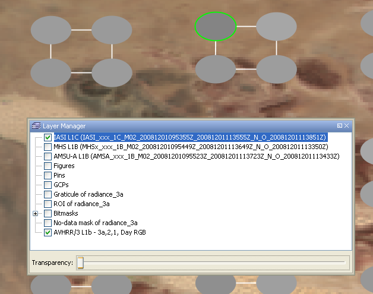
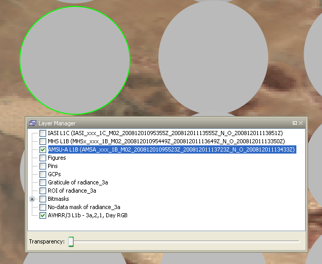
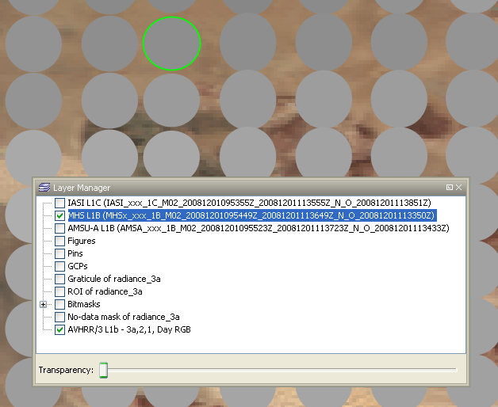

| METOP Sounder Tools | |
The METOP Sounder Tools have been brought into life in order to support users of data of the IASI, AMSU and MHS sensors on-board the EUMETSAT Metop satellites.
The software provides the following facilities for BEAM 4.5:
The METOP Sounder Tools have been developed by Brockmann Consult under EUMETSAT contract initiated and coordinated by Peter Schlüssel (EUMETSAT).
The footprint overlays will be automatically added to the layer manager, when an imageview for an AVHRR product is opened. For this the directory in which the AVHRR product is located is searched for IASI, AMSU-A and MHS products that follow the default naming convention. When no matching product is found the user will be asked to select a product manually.
The overlay overlay displays the shape of the sounder filled with a color corresponding to the measured brightness temperature. The layer manager can be utilized to enable and disable single layer or change the transparency.
The info views for the footprint overlay can opened using the corresponding button on the toolbar. For each
type of sounder instrument exist a different info view which show dedicated information about the selected IFOV.
To select an IFOV the corresponding layer has to be selected in the layer manager. Then the selection tool (the arrow) can be used
to select an IFOV.

An IASI footprint overlay on-top of an AVHRR RGB. When the IASI overlay is selected
(as indicated by the blue highlighted text) individual IFOVs can be selected with a
single mouse-click. The selected IFOV is drawn with a green border.

An AMSU footprint overlay on-top of an AVHRR RGB. When the AMSU overlay is selected
(as indicated by the blue highlighted text) individual IFOVs can be selected with a
single mouse-click. The selected IFOV is drawn with a green border.

An MHS footprint overlay on-top of an AVHRR RGB. When the MHS overlay is selected
(as indicated by the blue highlighted text) individual IFOVs can be selected with a
single mouse-click. The selected IFOV is drawn with a green border.